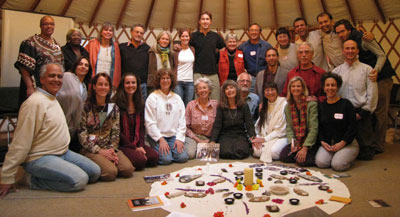

"How the Flow Fund Circles Began"
Speech by Marion Weber at Bioneers, 2006
To listen in mp3 audio, click here.
I started the Flow Fund Circle in May 1991. I had just completed a one year sabbatical from philanthropy and I was quite clear that I did not want to go back to the old way of working with money where people would come to visit me or send me proposals which would pile up on a table in my home. I would look at a pile of proposals, take one from the pile, read it quickly. If my heart felt warm I would fund it. If my stomach felt sore, I would not. I disliked this process immensely and of course it was unhealthy, fragmenting, and overwhelming to me.
So at the end of my sabbatical, I remember rolling on the floor and having a vision present of a many-armed spirit of generosity. Also at that time I made out my will and left money for visionary friends and associates to give away. This idea seemed so wonderful I decided to do this while I was alive and thus began a foundation without walls, paperwork, or bureaucracy called the Flow Fund Circle.
In a letter to my father, dated May 8, 1991, I wrote:
“I have been developing a flow fund concept in order to help lighten and brighten this work by including the wisdom and creativity of others. Ultimately my vision is to empower all people to be philanthropists. I was feeling pretty overwhelmed and heavy with this money work. It seemed so lonely and it left me not enough time to do healing and creative work. It also robbed me of time to just have fun and enjoy my relationships. I know that having too much money to handle is unhealthy for myself and the world. Therefore I seek a better way.”
So I began by inviting eight visionaries whom I had previously funded to each take $20,000 and give this money away spontaneously as they traveled. Each year for three years they would receive $20,000 to give away. There would be no salary to do this. This was not a job but rather an opportunity to practice generosity in the world.
The Flow Fund Circle became a relationship-based form of philanthropy full of inspiration and surprises. There was no overhead and only minimal paperwork. None of the FFC members were ever approached for money. Rather the gifts moved spontaneously in tune with the graces of synchronicity, attraction and intentionality to be of service. The funders were chosen because of their visionary and healing gifts and their generosity of spirit. They had not given money away before.
It was not possible to apply to be a Flow Funder Circle member. Members were chosen. Members agreed not fund their own projects, themselves, or relatives. They agreed to meet in circle once a year to share their stories with other members. Accountability was important. Reports communicated the spirit and outreach of the year’s work
A wonderful thing I have noted about the Flow Fund Circle is the sense of connection and community that is growing through the trust that is given and received.
A new funder from a former Soviet Republic writes: “It is very pleasant for me to feel myself like a part of one big circuit and to take part in one noble business under the name of philanthropy. The feeling of participation in this great business gives me force and confidence that common people can change the world. I am glad that a gift which passes through my hands to someone who needs it, delivers to them true pleasure and gives energy.”

We all share concern with the meaning and process of our work and we are deeply interested in what we can learn as a group from each other. We discuss what inspires, moves, surprises, and challenges us. I would like to acknowledge here with great gratitude the teaching of Angeles Arrien, a former Flow Fund Circle Holder. In her book The Second Half of Life, she that writes that “Love, Surprise, Inspiration and Challenge are the four rivers of life that sustain us, keep us from stagnation and connect us to great gifts”. Discussing these four rivers of life each year in relationship to our Flow Fund Circle work has added a depth to our work which we have all valued
Flow Funding allows giving money away to be an adventure as opposed to a duty or burden. As Sukie, a former Flow Fund Circle member said, “This is foot-to-the floor philanthropy and it’s glorious!”
Rachel’s story
Rachel overhears a group of people at the table next to her lamenting that they will have to close down the support group for parents who have lost an infant at birth because the funding has dried up for this work. One man asks how much money is needed. The accountant responds that it is $3,000. Even though most of the therapists have donated their time, everybody at the table is in despair that they would never be able to raise so much money.
Rachel, a Flow Funder, a former pediatrician and attender of births, and now one of the most effective healers of the medical profession, writes a check and taps the accountant on the shoulder and says, “Here is your money!”
This story illustrates some of the magic of Flow Funding. Each funder attracts people and projects that reflect their spirit and field of interest. The more new funders there are, the more diverse will be the funding. I am constantly delighted and surprised by the wide variety of needs that flow funders are finding and helping with.
After Flow Funding for 17 years we have shared stories and resources with 89 new philanthropists.
About 80 percent of Flow Fund money flows out of the United States. People and projects in 23 countries have been touched by these funds. I am beginning to Flow Fund with collectives and hoping this year to encourage Foundations and other funders to consider allocating ten percent of their funds for Flow Funding. I would like to express my deep gratitude to each and every FFC member and to Sandra Hobson, my friend and adviser. I would like to end with the prayer that began this work:
“May the rivers of wealth be undammed and flow freely over the earth. May the gifts move through increased hands until all people experience the abundance of life.”